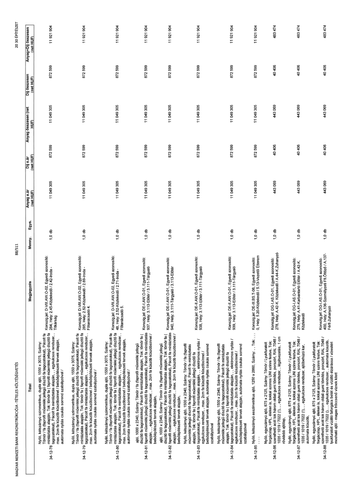

| Tétel | Megjegyzés | Menny. | Egys. | Anyag e.ár (net HUF) | Díj e.ár (net HUF) | Anyag összesen (net HUF) | Díj összesen (net HUF) | Anyag+Díj összesen (net HUF) |
|---|---|---|---|---|---|---|---|---|
| 34-12-78 | Nyíló, kétszárnyú szimmetrikus, dupla ajtó, 1550 x 3075, Szárny: Tömör / fa (faprofil műemléki jellegű díszítő fa tagozatokkal), Pácolt fa mintázatás alapján, Tok: tömör fa (faprofil műemléki jellegű díszítő fa tagozatokkal), Pácolt fa mintázatás alapján,, egykulcsos rendszer,, max. 2cm fa küszöb küszöbsínnel / belsőépítészeti tervek alapján, automata nyitás csukás sorrend szabályzóval /; Konszign.jel: D-VIII.AW.O-02, Egyedi azonosító: 284, Hely: 2.45-Közlekedő / 2.42-Iroda - Titkárság | 1,0 | db | 11 049 305 | 872 599 | 11 049 305 | 872 599 | 11 921 904 |
| 34-12-79 | Nyíló, kétszárnyú szimmetrikus, dupla ajtó, 1550 x 3075, Szárny: Tömör / fa (faprofil műemléki jellegű díszítő fa tagozatokkal), Pácolt fa mintázatás alapján, Tok: tömör fa (faprofil műemléki jellegű díszítő fa tagozatokkal), Pácolt fa mintázatás alapján,, egykulcsos rendszer,, max. 2cm fa küszöb küszöbsínnel / belsőépítészeti tervek alapján, automata nyitás csukás sorrend szabályzóval /; Konszign.jel: D-VIII.AW.O-02, Egyedi azonosító: 285, Hely: 2.52-Közlekedő / 2.69-Iroda - Főtanácsadó 4. | 1,0 | db | 11 049 305 | 872 599 | 11 049 305 | 872 599 | 11 921 904 |
| 34-12-80 | Nyíló, kétszárnyú szimmetrikus, dupla ajtó, 1550 x 3075, Szárny: Tömör / fa (faprofil műemléki jellegű díszítő fa tagozatokkal), Pácolt fa mintázatás alapján, Tok: tömör fa (faprofil műemléki jellegű díszítő fa tagozatokkal), Pácolt fa mintázatás alapján,, egykulcsos rendszer,, max. 2cm fa küszöb küszöbsínnel / belsőépítészeti tervek alapján, automata nyitás csukás sorrend szabályzóval /; Konszign.jel: D-VIII.AW.O-02, Egyedi azonosító: 483, Hely: 2.52-Közlekedő / 2.71-Iroda - Főtanácsadó 5. | 1,0 | db | 11 049 305 | 872 599 | 11 049 305 | 872 599 | 11 921 904 |
| 34-12-81 | ajtó, 1000 x 2340, Szárny: Tömör / fa (faprofil műemléki jellegű díszítő fa tagozatokkal), Pácolt fa mintázatás alapján, Tok: tömör fa (faprofil műemléki jellegű díszítő fa tagozatokkal), Pácolt fa mintázatás alapján,, egykulcsos rendszer,, max. 2cm fa küszöb küszöbsínnel / belsőépítészeti tervek alapján,; Konszign.jel: DE-I.AW.O-01, Egyedi azonosító: 937, Hely: 3.113-Előtér / 3.111-Tárgyaló | 1,0 | db | 11 049 305 | 872 599 | 11 049 305 | 872 599 | 11 921 904 |
| 34-12-82 | ajtó, 1000 x 2340, Szárny: Tömör / fa (faprofil műemléki jellegű díszítő fa tagozatokkal), Pácolt fa mintázatás alapján, Tok: tömör fa (faprofil műemléki jellegű díszítő fa tagozatokkal), Pácolt fa mintázatás alapján,, egykulcsos rendszer,, max. 2cm fa küszöb küszöbsínnel / belsőépítészeti tervek alapján,; Konszign.jel: DE-I.AW.O-01, Egyedi azonosító: 940, Hely: 3.111-Tárgyaló / 3.113-Előtér | 1,0 | db | 11 049 305 | 872 599 | 11 049 305 | 872 599 | 11 921 904 |
| 34-12-83 | Nyíló, kétszárnyú ajtó, 1500 x 2340, Szárny: Tömör / fa (faprofil műemléki jellegű díszítő fa tagozatokkal), Pácolt fa mintázatás alapján, Tok: tömör fa (faprofil műemléki jellegű díszítő fa tagozatokkal), Pácolt fa mintázatás alapján,, elektromos nyitás / egykulcsos rendszer,, max. 2cm fa küszöb küszöbsínnel / belsőépítészeti tervek alapján, automata nyitás csukás sorrend szabályzóval; Konszign.jel: DE-II.AW.O-01, Egyedi azonosító: 938, Hely: 3.113-Előtér / 3.111-Tárgyaló | 1,0 | db | 11 049 305 | 872 599 | 11 049 305 | 872 599 | 11 921 904 |
| 34-12-84 | Nyíló, kétszárnyú ajtó, 1500 x 2340, Szárny: Tömör / fa (faprofil műemléki jellegű díszítő fa tagozatokkal), Pácolt fa mintázatás alapján, Tok: tömör fa (faprofil műemléki jellegű díszítő fa tagozatokkal), Pácolt fa mintázatás alapján,, elektromos nyitás / egykulcsos rendszer,, max. 2cm fa küszöb küszöbsínnel / belsőépítészeti tervek alapján, automata nyitás csukás sorrend szabályzóval; Konszign.jel: DE-II.AW.O-01, Egyedi azonosító: 939, Hely: 3.113-Előtér / 3.111-Tárgyaló | 1,0 | db | 11 049 305 | 872 599 | 11 049 305 | 872 599 | 11 921 904 |
| 34-12-85 | Nyíló, kétszárnyú asszimmetrikus ajtó, 1250 x 2860, Szárny: -, Tok: -, ...; Konszign.jel: DE-III.BS.T-08, Egyedi azonosító: 0, Hely: 5.20-Közlekedő / 5.13-Vezetői Étterem | 1,0 | db | 11 049 305 | 872 599 | 11 049 305 | 872 599 | 11 921 904 |
| 34-12-86 | Nyíló, egyszárnyú ajtó, 875 x 2125, Szárny: Tömör / Lyukfúratolt forgácslap, HPL, éleken is, tokkal azonos UNI színre festve, Tok: szerelhető acél tok három oldali gumi tömítés, porszórt, RAL 7048 / 1035 / 1019 / 7022 (!),, egykulcsos rendszer,, légátvezetés, 1 cm rövidebb ajtólap,; Konszign.jel: DG-I.AS.O-01, Egyedi azonosító: 278, Hely: A.42-K. Közlekedő / A.44-K.Zuhanyzó | 1,0 | db | 443 069 | 40 406 | 443 069 | 40 406 | 483 474 |
| 34-12-87 | Nyíló, egyszárnyú ajtó, 875 x 2125, Szárny: Tömör / Lyukfúratolt forgácslap, HPL, éleken is, tokkal azonos UNI színre festve, Tok: szerelhető acél tok három oldali gumi tömítés, porszórt, RAL 7048 / 1035 / 1019 / 7022 (!),, egykulcsos rendszer,, automata küszöb,; Konszign.jel: DG-I.AS.O-01, Egyedi azonosító: 279, Hely: A.41-Karbantartó Előtér / A.42-K. Közlekedő | 1,0 | db | 443 069 | 40 406 | 443 069 | 40 406 | 483 474 |
| 34-12-88 | Nyíló, egyszárnyú ajtó, 875 x 2125, Szárny: Tömör / Lyukfúratolt forgácslap, HPL, éleken is, tokkal azonos UNI színre festve, Tok: szerelhető acél tok három oldali gumi tömítés, porszórt, RAL 7048 / 1035 / 1019 / 7022 (!),, egykulcsos rendszer,, automata küszöb, lyukfúratolt vízálló faforgács betét és vízálló élzárása / vízestéri mosható ajtó - magas fröccsenő víznek kitett; Konszign.jel: DG-I.AS.O-01, Egyedi azonosító: 400, Hely: A.136-Személyzeti Ffi.Öltöző / A.137-Férfi Zuhanyzó | 1,0 | db | 443 069 | 40 406 | 443 069 | 40 406 | 483 474 |
